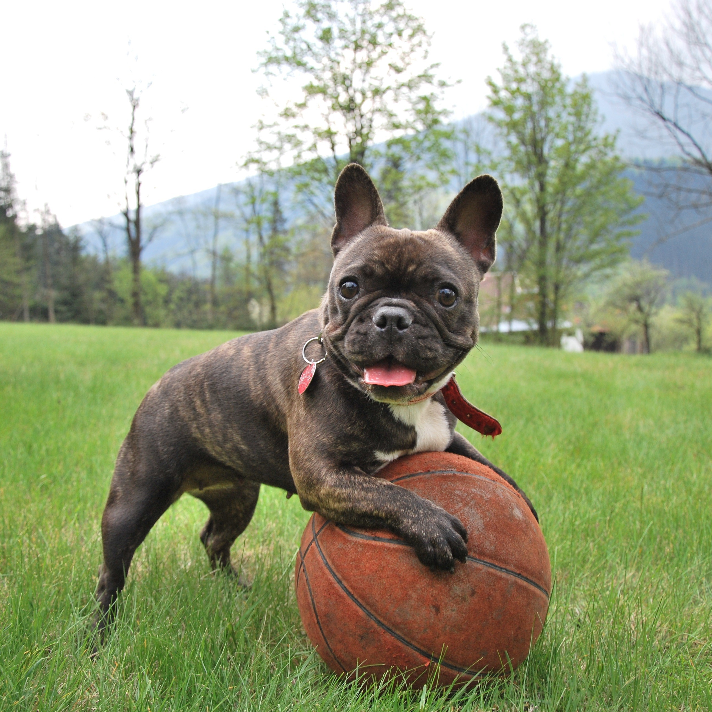
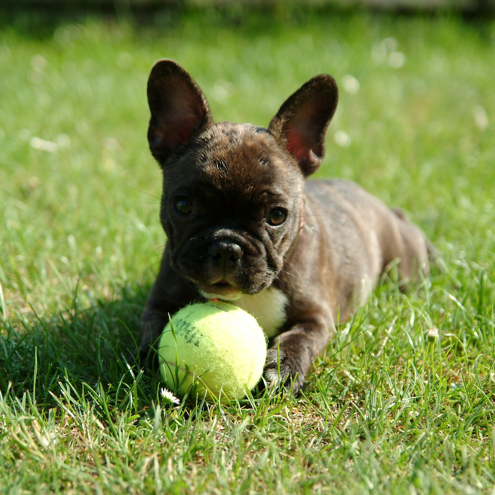
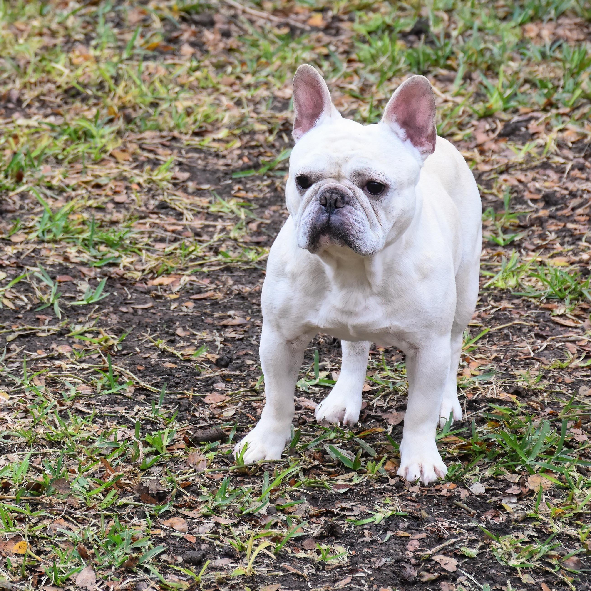

Calm demeanor, is happiest when curled up on a rug near her favorite human. World-class snorer and enjoys a slow stroll through the park.
Adoption Fee: $300

Gizmo
Age: 1 year
Sex: Male
Energetic for a Frenchie, incredibly social, loves every dog he meets, and will do just about anything for a small piece of cheese.
Adoption Fee: $750

Bailey
Age: 5 months
Sex: Female
Loves to explore any and all spaces, still learning his manners but makes up for his mischief with unlimited puppy kisses.
Adoption Fee: $2,000

Duke
Age: 6 years
Sex: Male
Incredibly loyal, very well-behaved, and relatively relaxed will lean all his weight against your leg to make sure you know he's there.
Adoption Fee: $250
If you find a Frenchie you're interested in. Please contact us or visit our location at 6601 Old Winter Garden Rd Orlando, FL